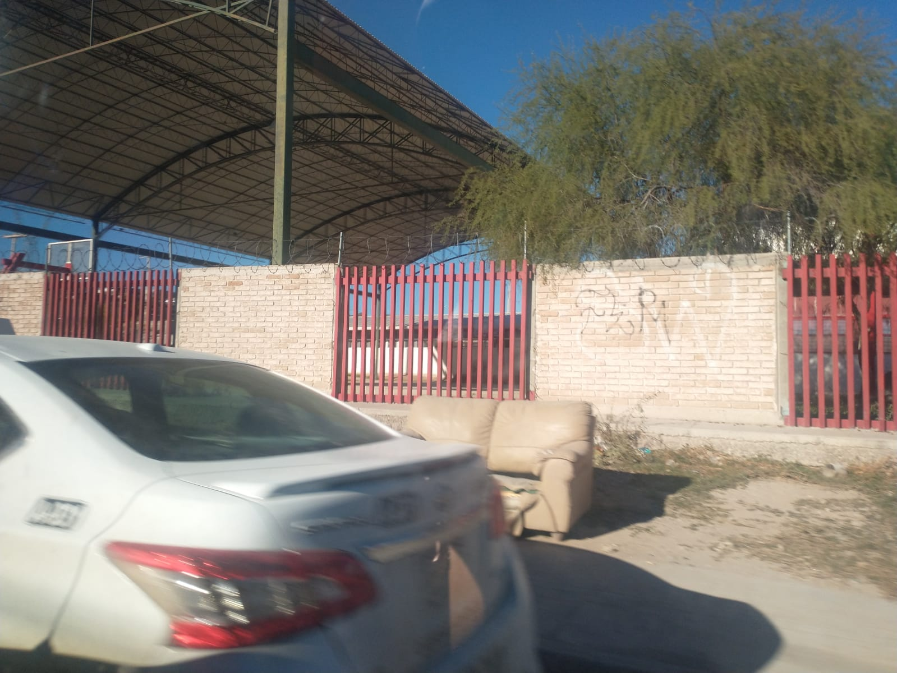
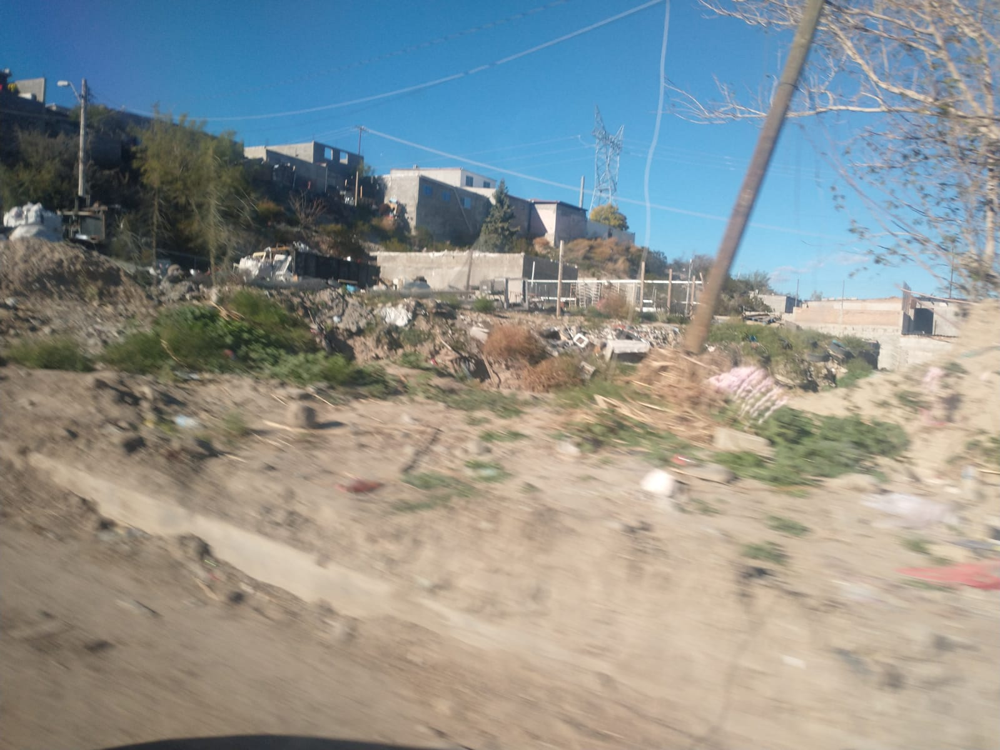
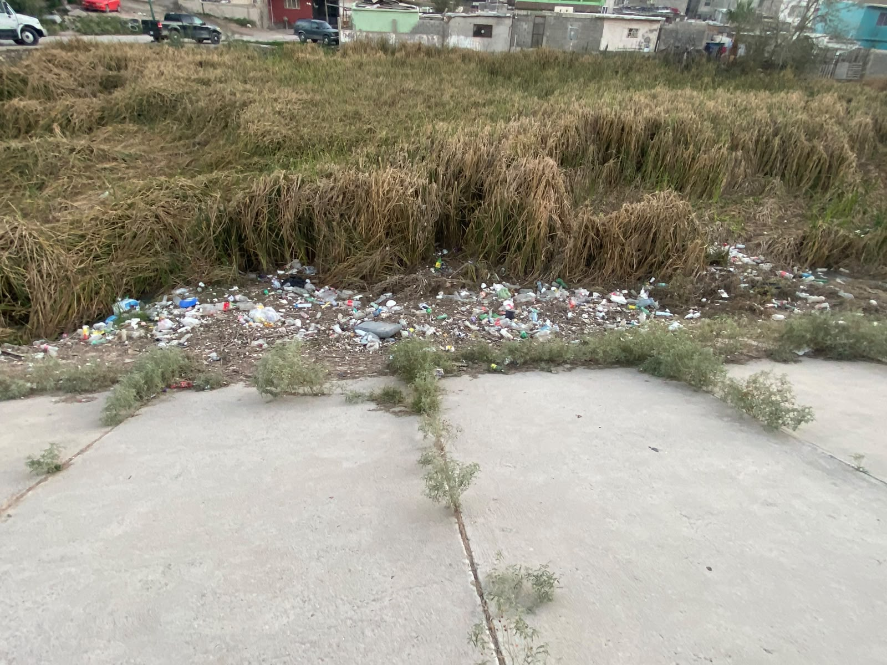
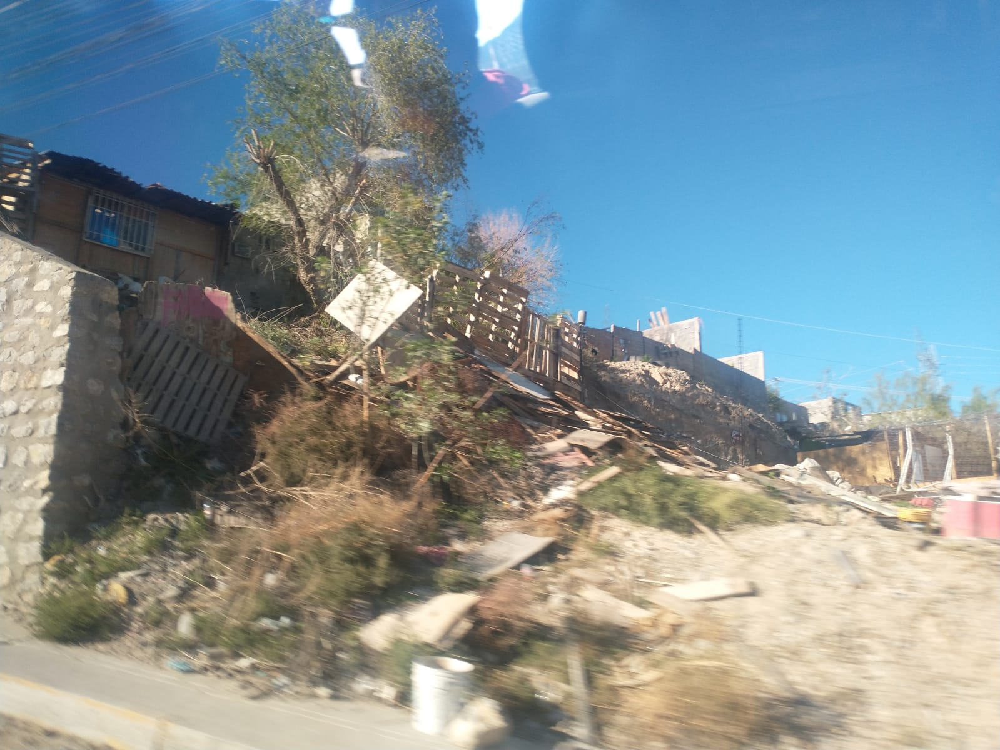

En nuestra comunidad, principalmente en los alrededores de la calle Tecate y
del CBTIS 269, se generan diferentes tipos de residuos debido a las actividades
diarias de los habitantes, estudiantes y comerciantes. Entre los residuos más comunes
se encuentran las botellas de plástico, bolsas, envolturas de alimentos, latas de aluminio,
papel, cartón, restos de comida y envases desechables. También se pueden encontrar residuos
como muebles viejos, llantas y aparatos electrónicos que algunas personas desechan. Es
importante separar estos materiales para facilitar su reciclaje y evitar que terminen
contaminando las calles y los espacios públicos.

La basura puede acumularse principalmente en las calles, banquetas, terrenos baldíos y
espacios cercanos a las viviendas y establecimientos. En los alrededores del CBTIS 269 se
ha reportado anteriormente la presencia de terrenos utilizados como tiraderos de residuos, por
lo que se realizaron jornadas de limpieza por parte del personal municipal. Esta situación
demuestra la importancia de mantener limpios los espacios públicos y evitar que las personas
arrojen basura en lugares no destinados para ello.


Uno de los principales problemas ambientales de nuestra comunidad es la acumulación de
basura en las calles y terrenos baldíos, así como la falta de separación y reciclaje de los
residuos. Esto puede provocar malos olores, contaminación del suelo, presencia de insectos y
otros animales, además de dar una mala imagen a la colonia. También existe el problema de que
algunas personas no depositan correctamente sus desechos y contribuyen a la formación de
tiraderos clandestinos. Por esta razón, es necesario fomentar la educación ambiental, colocar
la basura en los lugares adecuados, separar los materiales reciclables y organizar campañas de
limpieza para mejorar las condiciones de nuestra comunidad.

Inicio